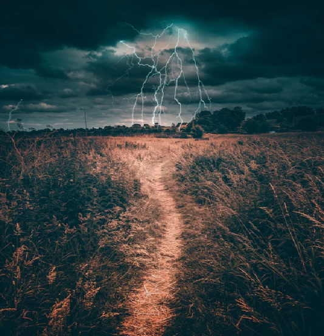
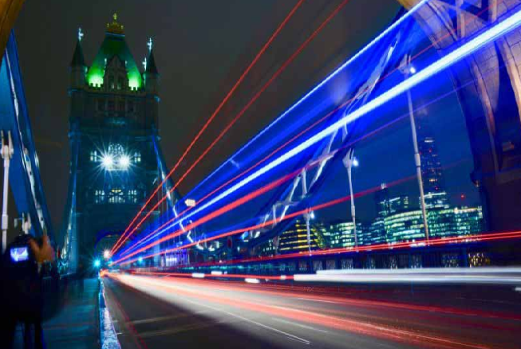

What is Line Composition?
Lines are a fundamental element in any composition, serving as a
key structure in visual art. These lines don't always have to be
straight; they can take various forms, such as curves, zigzags,
or diagonals. If you observe closely, you will see lines all
around you, both naturally and artificially, and these can be
incorporated creatively into your compositions. Whether they're
subtle or bold, lines help guide the viewer's eye and influence
the overall feel of the image.
Importance of Line Composition
Lines are vital in any composition as they provide structure, guide the viewer’s eye, and influence the mood or flow of a design. They can be straight or take dynamic forms like curves, zigzags, or diagonals, adding variety and energy to visual art. Lines are everywhere, both in nature and human-made environments, offering endless inspiration for creative use. Subtle lines can add delicacy, while bold ones can command attention, making them a powerful tool for directing focus and shaping the overall impact of an image.
Diagonals
Lines are a fundamental element in any composition, serving as a key structure in visual art. These lines don't always have to be straight; they can take various forms, such as curves, zigzags, or diagonals. If you observe closely, you will see lines all around you, both naturally and artificially.


S-Curves
A bitmap (or raster graphic) is a digital image made up of a grid of tiny dots, where each dot represents a single pixel on a screen. At 100% zoom, each dot aligns directly with a pixel on the display. In a typical bitmap image, each pixel can be assigned a unique color, and together, these pixels form a rectangular picture. Bitmap images come in various file formats. The standard uncompressed format is known as the BMP format or device-independent bitmap (DIB) format. BMP files include a header that specifies details like the image’s dimensions and the number of colors it uses, followed by a list of pixels with their color data. This format is widely supported across platforms, but because it is uncompressed, it is not very efficient for storing large images due to its large file size.
Horizontal
Leading lines are elements in a photo that guide the viewer's eye into the image, often toward the main subject. Roads, rivers, or rows of trees are common examples. To be effective, they must lead to a focal point or "stopper," such as a subject or object within the frame. Without this, the viewer's gaze may leave the image, reducing its impact.


Converging Line
Converging lines are lines that appear to move towards a single point on the horizon, creating the illusion of depth and perspective in a composition. This effect occurs when parallel lines, such as roads, railways, or building edges, seem to draw closer together as they recede into the distance. Converging lines are often used in photography, art, and design to lead the viewer's eye toward a focal point, creating a sense of movement or drawing attention to a specific area within the frame. They help enhance the three-dimensionality of a two-dimensional image.
Relationship between
Lines and Shapes
In photography, the relationship between lines and shapes is foundational to composition. when one or more lines connect or close, they form a shape, transforming simple directional guides into defined spaces within the frame. Shapes created by lines can add structure, balance, and meaning to an image, drawing attention to specific areas and contributing to the overall visual harmony.
Importance of Shapes
Shape is important in design and photography because it helps define the structure of a composition, providing clarity and organization. Shapes guide the viewer’s eye, highlighting focal points and creating visual balance. They also contribute to the emotional impact of an image, with different shapes evoking various feelings—sharp angles may suggest tension, while rounded shapes can convey softness or harmony. Shapes also help in creating a sense of space and depth, adding complexity and interest to a composition. Ultimately, shapes are a foundational element in both visual appeal and conveying meaning in an image.
Geometric
These are defined by straight or curved lines meeting to form recognizable forms like circles, squares, triangles, or rectangles. They often convey order, symmetry, and stability. Geometric shapes are frequently seen in man-made structures such as buildings, windows, or patterns in urban landscapes.
A helpful tip in photography for using lines is to incorporate leading lines into your composition. These are lines in the scene, like roads, rivers, fences, or architectural elements, that draw the viewer’s eye toward the main subject or focal point of the image. Experiment with different angles and perspectives to emphasize the lines, creating a sense of depth and guiding the viewer's gaze through the frame. Lines can also be used to create a sense of movement or direct attention, so be mindful of how they influence the flow and balance of your image.
Challenge yourself to capture a photograph where lines are the main feature of the composition. Look for both natural and man-made lines—like roads, fences, or architectural elements—and use them creatively to guide the viewer’s eye to a focal point or create a sense of depth. Experiment with different perspectives and angles to emphasize the lines, and focus on how they can shape the mood or story of your image. Remember, the goal is to tell a visual story using lines, so try not to rely too much on other elements in the frame. Get creative and see how lines can transform your photography!